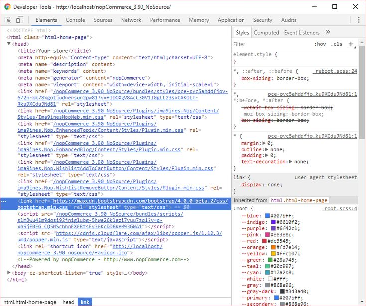

10 astuces de développement web pour les débutants
Par MALONGA Saint Chalbhery —
Catégorie : Développement web
Tags : HTML, CSS, JavaScript, Débutant
Commencer en développement web peut sembler intimidant, surtout quand on débute sans expérience préalable. Pourtant, avec les bonnes habitudes dès le départ, on peut progresser rapidement. Voici dix astuces que j'aurais aimé connaître quand j'ai commencé mon parcours à Brazzaville.
1. Maîtrisez le HTML avant tout
Le HTML est le squelette de chaque page web. Avant de vous lancer dans le CSS
ou JavaScript, assurez-vous de comprendre la structure sémantique : utiliser
header, main, article et footer
plutôt que des div partout.
« La sémantique HTML consiste à utiliser le balisage HTML pour renforcer le sens du contenu plutôt que pour définir son apparence. »
2. Validez votre code régulièrement
Utilisez le validateur W3C pour vérifier que votre HTML est correct. Un code valide est plus facile à maintenir et plus accessible.
3. Apprenez les DevTools du navigateur
Les outils de développement intégrés à Chrome ou Firefox sont indispensables pour inspecter le DOM, déboguer le CSS et analyser les performances.

4. Pratiquez tous les jours
Même 30 minutes par jour valent mieux qu'une session de 5 heures le week-end. La régularité construit la mémoire musculaire et la confiance.
5. Versionnez avec Git dès le début
Initialisez un dépôt Git pour chaque projet, même petit. GitHub devient votre portfolio et votre historique d'apprentissage.
Tableau comparatif des technologies front-end
| Technologie | Rôle | Difficulté | Durée estimée |
|---|---|---|---|
| HTML5 | Structure du contenu | Facile | 2 à 4 semaines |
| CSS3 | Style et mise en page | Moyenne | 1 à 3 mois |
| JavaScript | Interactivité | Moyenne à difficile | 3 à 6 mois |
| Git | Versionnement | Facile | 1 à 2 semaines |
6. Lisez le code des autres
Explorez des projets open source sur GitHub. C'est l'une des meilleures façons d'apprendre les bonnes pratiques et les conventions de nommage.
7. Pensez accessibilité dès le départ
Ajoutez des attributs alt aux images, des label
aux formulaires et utilisez des contrastes de couleurs suffisants.
L'accessibilité profite à tous les utilisateurs.
8. Construisez des projets réels
Les tutoriels seuls ne suffisent pas. Créez une page de profil, un blog, un menu de restaurant — des projets concrets qui restent dans votre portfolio.
9. Rejoignez une communauté
Les communautés tech congolaises et africaines sur Discord, WhatsApp ou lors de meetups locaux offrent soutien, retours et opportunités.
10. Soyez patient avec vous-même
Chaque développeur expérimenté a été débutant un jour. Les erreurs font partie du processus d'apprentissage. Célébrez chaque petite victoire !
Commentaires (3)
-
Marie Kimbembe
Excellent article ! Le conseil sur la validation W3C m'a beaucoup aidée lors de mon premier projet à l'Akieni Academy.
-
Patrick Nzuzi
Je confirme pour Git : j'ai perdu du code avant d'apprendre à versionner. Maintenant je ne code plus sans Git !
-
Sarah Mpassi
Le tableau comparatif est très utile pour planifier mon apprentissage. Merci pour ce contenu de qualité !